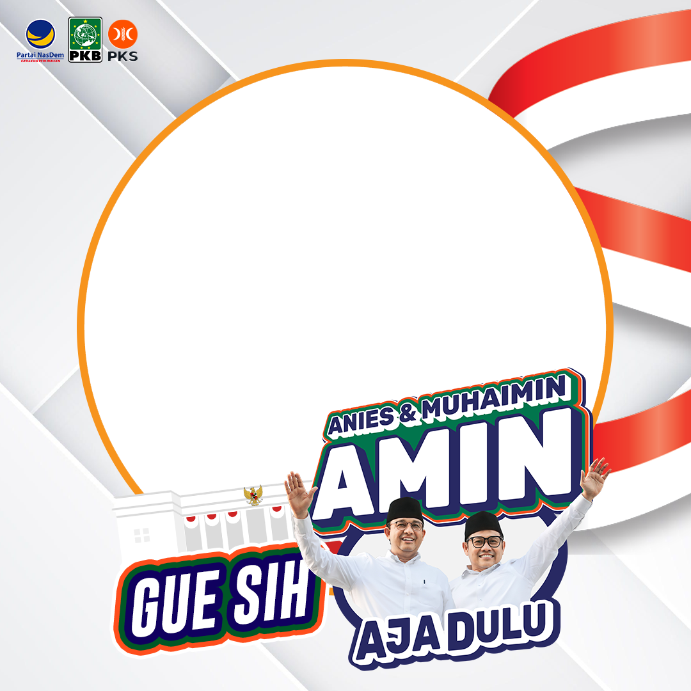

Pilpres 2024 Twibbon Generator
Notification
Selamat Datang di Pilpres 2024 Twibbon Generator!
Silakan klik "Capture Image" dan pose dengan jari sesuai capres favorit Anda.
Website ini tidak menyimpan hasil foto (biaya storagenya mahal bjir), aman slurr
